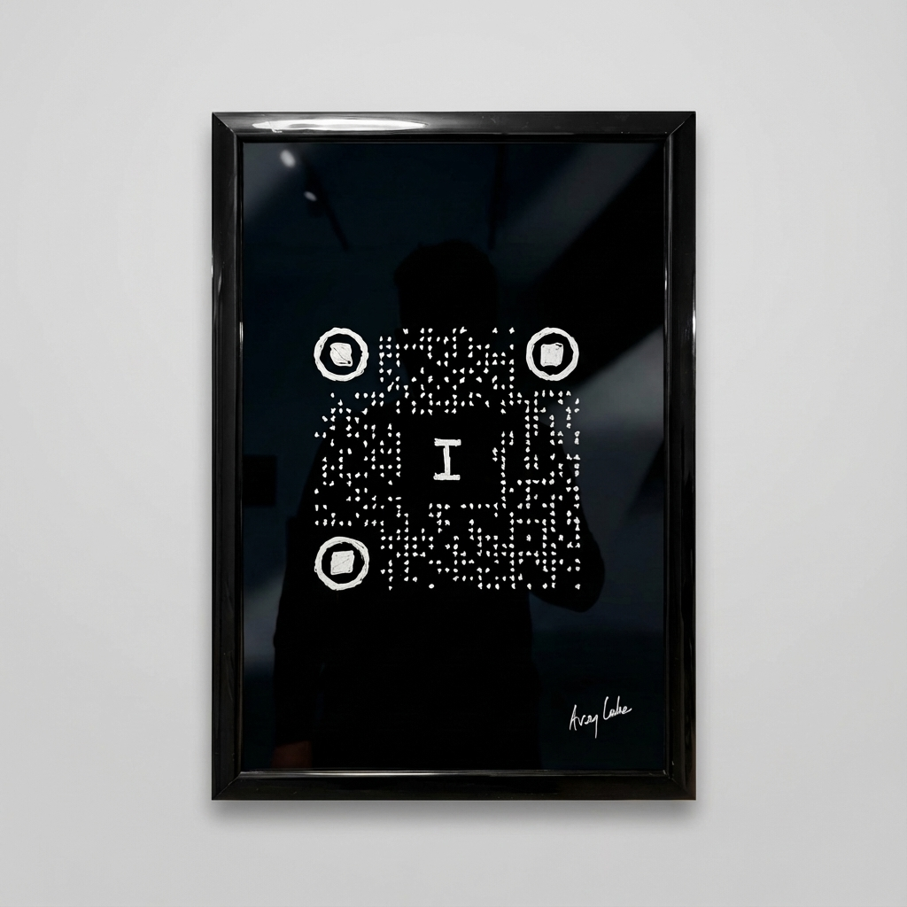

I, Human

Medium: uni® POSCA® PC-1M Paint Marker (White) on glass
Surface: Glass with black backing
Frame: 12" × 18" black frame
Effect: Black mirror—viewer's reflection overlaid with QR code
Edition: Unique (1/1)
Year: 2026
About the Work
I, Human is a functional QR code, meticulously hand-drawn on glass with white paint marker. Each element—traditionally generated by algorithms—is recreated through human labor, asserting individual presence within machine logic. The black backing behind the glass creates a "black mirror" effect, where viewers see their own reflection overlaid with the QR code.
The word "I" sits at the center of the data pattern, surrounded by hand-drawn sparkles that represent what algorithms cannot measure: hope, consciousness, the irreducible human signal that persists beyond quantification.
This piece embodies a paradox: QR codes are meant to be machine-generated, instantly scannable markers of efficiency. By hand-drawing each pixel on glass, the artist reclaims the digital through analog means—the "I" creating its own identity within the very systems designed to commodify it. The viewer confronts both the data pattern and their own reflection, becoming part of the black mirror.
When scanned, the QR code links to Protocol 06: The Signal (i.averylakeofficial.com), an interactive digital experience exploring what remains irreducibly human in the age of artificial intelligence. The physical artwork becomes a portal to its digital counterpart—two expressions of the same question.
I, Human asks: At the moment of final reduction, when we thought humans could be reduced to mere data, can we still find the human signal? The flattening has failed. The "I" persists.
Technical Details
Title: I, Human
Artist: Avery Lake
Year: 2026
Citation: Lake, Avery. I, Human. 2026. uni POSCA paint marker on glass, 12" × 18".
Medium: uni® POSCA® PC-1M Extra-Fine Bullet Tip Paint Marker (White) on glass
Process: QR code hand-drawn directly on glass surface with black backing behind to create "black mirror" effect
Surface: Glass (framed)
Frame: 12" × 18" black frame with black backing
Effect: Black mirror—viewers see their own reflection with QR code overlaid
Functionality: QR code scans to Protocol 06: The Signal (i.averylakeofficial.com)
Edition: Unique work (1/1)
Related Work
I, Human is part of The Digital Audit of the Human Condition, an ongoing multimedia project examining humanity in the Intelligence Age. The project includes:
THE SIGNAL (Album, 2026) — A 9-track exploration of what remains irreducibly human when everything becomes data. Each track corresponds to a web-based protocol examining AI, commodification, and consciousness.
Gem Mint Abundance (Installation, 2026) — Opening January 9 at The Gallery George, Vancouver. A mixed-media installation examining spiritual commodification through Tarot and trading card culture.
Together, these works explore the same question from different angles: What happens to human value in an age that can measure, optimize, and sell everything?
About the Artist

Image: Tile #3 from Mirror Making of a Self Portrait, Avery Lake, 2025
Avery Lake is a Swiss-Canadian conceptual artist based in British Columbia's Fraser Valley. Their interdisciplinary practice spans visual art, interactive digital experiences, and music, exploring the tension between human depth and technological reduction.
Lake's work asks: In an age where everything can be quantified, commodified, and optimized, what remains priceless? Through installations, protocols, and sonic meditations, they search for the signal that cannot be flattened—the irreducible human element that persists beyond data.